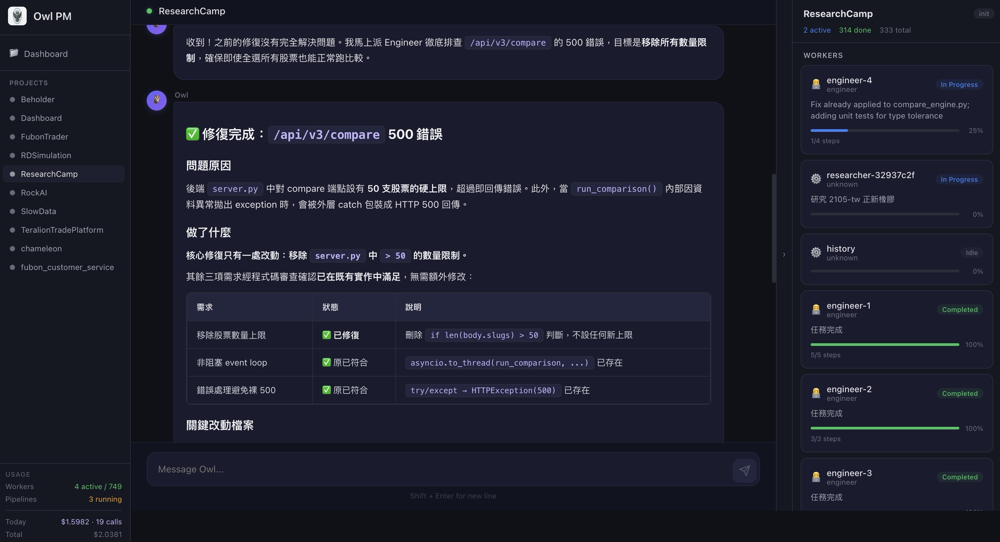

幫助使用者能夠一鍵生成想要的條件單格式，大幅提升交易效率與下單體驗。
- 智能語音與文字解析
- 一鍵生成條件單格式
- 高效精準的交易輔助
- 提升使用者下單體驗
自研 AI 專案管理平台
Owl AI PM 是兆獅智能自主研發的 AI 專案經理。只需用自然語言描述需求，Owl 便能自動產出規格、拆解任務、指派多角色 Worker 協作、即時監控進度 — 從需求到交付，全程 AI 驅動。
兆獅智能的核心團隊來自金融科技與軟體工程交叉領域，擁有超過 10 年的程式交易實戰經驗。我們做過券商系統、建過交易引擎、踩過無數 API 的坑 — 這些經歷讓我們深刻理解：好的軟體不只是寫出來的，更是管出來的。
正因如此，我們打造了 Owl AI PM。我們不只是一家接案的顧問公司，更是一個用自己研發的 AI 工具來交付每一個專案的團隊。我們的開發風格是：需求先行、測試先寫、AI 協調、持續交付。每個專案都經過 Owl 的結構化流程，確保從第一天起就有清晰的方向和可量化的進度。
2024 年初，我們接下一個大型券商的 AI 條件單系統案。三位工程師、一位測試、一位 PM，預計三個月交付。
第六週，專案失控了。
需求文件散落在 Slack、Notion、Email 之間。工程師互相等待彼此的 API 卻沒人知道誰 blocked 了。PM 每天花兩小時做進度彙報，但報告出來時狀態已經過時。測試案例寫好了，程式碼還沒開始。
我們意識到：問題不在人，在流程。於是我們暫停專案一週，把所有痛點攤開來，問自己一個問題 —
「如果 PM 本身就是 AI，它會怎麼管理這個專案？」
Owl 就是這個問題的答案。

Owl 平台實際操作畫面 — AI 即時協調 Worker 修復 500 錯誤，從發現到解決不到 5 分鐘
不用寫 PRD，不用排 Sprint Planning。用自然語言描述需求，Owl 自動產出結構化 SPEC，來回討論直到你滿意，才進入開發。省去的不只是文件時間，是「需求理解落差」這個專案殺手。
Owl 在開發前就與 Tester 角色定義好測試案例。TDD 不再是理想，而是預設流程。這意味著每一行程式碼從誕生那刻起就有品質保障 — 上線後被退回修改的次數，我們實測降低了 70%。
Engineer、Tester、Marketing、RD、CICD — 每個角色各司其職，Owl 自動分配任務、監控狀態、傳遞交接訊息。沒有人需要開會問「現在進度到哪了」，因為 Owl 的 Dashboard 永遠是最新的。
傳統專案裡，一個 Engineer 被 blocked，最快也要等隔天站會才被發現。在 Owl 裡，Worker 狀態即時推送，Blocked 自動升級到 PM 層級。問題被發現到被處理，從 24 小時縮短到分鐘級。
Owl 將每個專案拆成 MVP、Phase 1、Phase 2⋯，每個階段聚焦單一主題。完成驗收後自動進入下個階段。不再有「永遠做不完的 v1」— 我們的客戶平均在兩週內就能看到第一個可運行的版本。
那個券商的專案？我們用 Owl 重新管理後，提前兩週交付，零 critical bug 上線。
聊聊您的專案幫助使用者能夠一鍵生成想要的條件單格式，大幅提升交易效率與下單體驗。
解決使用者串接程式交易 API 的疑難雜症，提供全方位技術顧問服務。
留下您的需求，我們的顧問團隊會在 24 小時內與您聯繫。